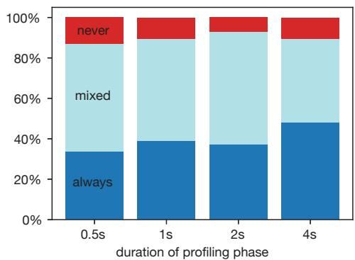
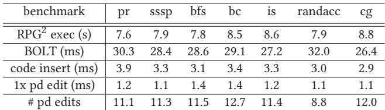
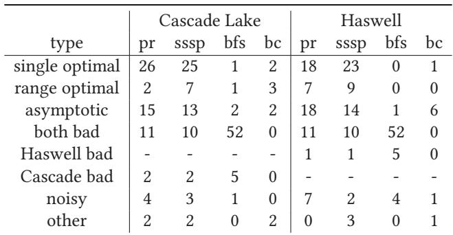
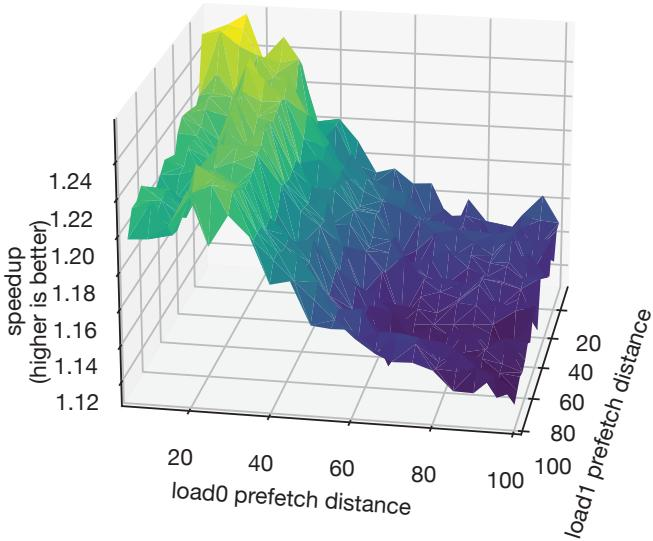

RPG2: Robust Profile-Guided Runtime Prefetch Generation 图表详解¶
Figure 1. The sssp benchmark from CRONO [2] has very different optimal prefetch distances (shaded regions) with different inputs.¶

- 图表展示了 sssp 基准测试在 Haswell 架构上的性能表现，横轴为 prefetch distance（预取距离），纵轴为 speedup（加速比），基准线为 1.0。
- 四条曲线分别代表不同输入数据集：RO-edges（绿色）、amazon0601（蓝色）、gowalla（紫色）、NotreDame（橙色）。
- 每条曲线的阴影区域标示了该输入下最优预取距离范围，即加速比最高的区间：
- RO-edges：最优区间为 20–34，最高加速比接近 1.8x。
- amazon0601：最优区间为 70–100，加速比稳定在 1.2x 左右。
- gowalla：最优区间为 1–2，加速比约 1.2x，超过此范围性能迅速下降。
- NotreDame：无明显最优区间，整体加速比接近或低于 1.0，部分距离甚至导致性能下降。
- 数据表明，同一程序在不同输入下，最优预取距离差异巨大，静态编译器难以统一优化。
- 表格总结各输入最优预取距离与性能表现：
| 输入数据集 | 最优预取距离范围 | 最高加速比 | 性能趋势 |
|---|---|---|---|
| RO-edges | 20–34 | ~1.8x | 明显峰值，范围较宽 |
| amazon0601 | 70–100 | ~1.2x | 平缓上升后趋于稳定 |
| gowalla | 1–2 | ~1.2x | 窄峰，过早或过晚均显著降速 |
| NotreDame | 无明确最优 | ≤1.0x | 多数距离无收益，部分有害 |
- 此图直观揭示了预取距离对性能的高度敏感性，强调动态调整的必要性，也是 RPG2 系统设计的核心动机。
Figure 2. The pr benchmark from CRONO [2] sees a speedup or a slowdown with prefetching, depending on the microarchitecture.¶

- 图表展示了 CRONO 套件中的 pr 基准测试在不同微架构和输入下的性能表现，纵轴为 speedup（越高越好），横轴为 prefetch distance。
- 四条曲线分别代表两种输入（wiki-topcats 和 tvshow-edges）在两种微架构（Cascade Lake 和 Haswell）上的表现：
- wiki-topcats Cascade Lake：虚线浅蓝色，整体表现优异，speedup 稳定在 1.75–2.00 区间。
- tvshow-edges Haswell：实线深绿色，表现中等，speedup 在 1.00–1.25 之间波动。
- wiki-topcats Haswell：实线浅蓝色，表现较差，speedup 接近 1.00，部分区域甚至低于 1.00。
- tvshow-edges Cascade Lake：虚线深绿色，表现最差，speedup 多数时间低于 1.00，表明 prefetching 导致性能下降。
- 数据总结如下：
| 输入 | 微架构 | 性能趋势 | 最大 speedup |
|---|---|---|---|
| wiki-topcats | Cascade Lake | 显著提升 | ~2.00 |
| tvshow-edges | Haswell | 轻微提升 | ~1.25 |
| wiki-topcats | Haswell | 基本无提升或轻微下降 | ~1.00 |
| tvshow-edges | Cascade Lake | 明显下降 | <1.00 |
- 关键发现：
- prefetching 的效果高度依赖于微架构与输入的组合，同一输入在不同微架构上可能产生完全相反的效果。
- Cascade Lake 对 wiki-topcats 输入表现出极佳的 prefetch 效果，但对 tvshow-edges 输入则适得其反。
- Haswell 上 tvshow-edges 输入受益于 prefetching，而 wiki-topcats 则几乎无收益。
- 这种不一致性凸显了静态编译器难以准确预测最优 prefetch 配置的问题，也说明了 RPG2 这类动态调整系统的重要性。
Figure 3. The bfs benchmark from CRONO [2] often (but not always) suffers significant performance slowdown with prefetching.¶

- 图片展示了 bfs 基准测试在不同输入和微架构下的性能表现，横轴为 prefetch distance（预取距离），纵轴为 speedup（加速比），基准线为 1.0。
- amazon0505 输入在 Cascade Lake 上表现良好，加速比稳定在 1.0 以上，表明预取在此配置下有效。
- 同一输入 amazon0505 在 Haswell 上加速比略低于 1.0，说明预取在此微架构下效果不佳或略有拖累。
- RO-edges 输入在 Haswell 上加速比约为 0.45，显著低于基准线，表明预取导致严重性能下降。
- RO-edges 输入在 Cascade Lake 上加速比约为 0.3，性能下降更为严重，进一步凸显预取的负面影响。
- 数据表明，预取效果高度依赖于 输入数据 和 微架构，同一输入在不同硬件上表现差异巨大。
- 性能变化趋势显示，prefetch distance 的调整对性能影响有限，尤其在 RO-edges 输入中，无论距离如何调整，性能均未改善。
| 输入 | 微架构 | 加速比范围 | 性能趋势 |
|---|---|---|---|
| amazon0505 | Cascade Lake | >1.0 | 稳定提升 |
| amazon0505 | Haswell | ~0.95 | 轻微下降 |
| RO-edges | Haswell | ~0.45 | 显著下降 |
| RO-edges | Cascade Lake | ~0.3 | 极度下降 |
- 此图印证了论文核心观点：预取是双刃剑，不当使用会导致性能大幅下滑，需动态调整以适应运行时环境。
Figure 4. RPG2 proceeds through four phases when optimizing a target process.¶

- 图片展示了 RPG2 系统优化目标进程的四个核心阶段，从左至右依次为：Profile、Build new binary、Insert code 和 Tune。
- 在第一阶段 Profile 中，RPG2 通过分析运行中的目标进程，识别出频繁触发 LLC miss 的指令。图中示例代码
ld [r3+r2]→r4被标记为高频 LLC miss 源，其前向依赖链（backwards slice）被提取用于后续 prefetch kernel 构建。 - 第二阶段 Build new binary 基于 BOLT 工具生成新二进制文件。图中红色高亮部分为插入的 prefetch kernel，包含：
- 寄存器保存（
push r5） - 地址计算（
add r1, #20→r5，其中 20 为初始 prefetch distance） - 边界检查（
cmp r5, #100; bgte cleanup） - 预取指令（
pf [r3+r5]） - 清理与恢复（
pop r5） - 原始循环体继续执行
- 第三阶段 Insert code 将新函数
newtop注入目标进程地址空间。此阶段需暂停进程，通过ptrace或libpg2实现代码替换，并更新所有指向原函数top的调用点和栈返回地址，确保控制流正确跳转至newtop。 - 第四阶段 Tune 对 prefetch distance 进行动态调整。图中显示将距离从 20 修改为 32（
add r1, #32→r2），该过程通过修改机器码中的立即数实现，每次调整仅需重写少量字节，且伴随短暂进程暂停。 - 整个流程强调 在线优化 与 无侵入式回退：若 tuning 后性能未提升，RPG2 可快速回滚至原始代码
top，避免性能损失。 - 关键术语保留英文：LLC miss、prefetch kernel、backwards slice、BOLT、ptrace、libpg2。
- 该图直观呈现了 RPG2 如何在不中断程序语义的前提下，动态注入并优化 prefetch 指令，体现其“robust”特性——既能提升性能，也能安全回退。
| 阶段 | 主要操作 | 关键技术/组件 | 目标 |
|---|---|---|---|
| Profile | 识别高频 LLC miss 指令 | PEBS, perf | 定位可优化点 |
| Build new binary | 插入 prefetch kernel | BOLT, InjectPrefetchPass | 生成含预取逻辑的新函数 |
| Insert code | 注入新函数到运行进程 | ptrace, libpg2, OSR | 实现运行时代码替换 |
| Tune | 动态调整 prefetch distance | IPC 监控, 二分搜索 | 找到最优预取距离或回退 |
- 图中箭头与虚线框清晰划分各阶段边界，强调“paused”状态仅在关键操作时发生，其余时间目标进程正常运行，最小化性能干扰。
Table 1. Memory access categories that RPG2 supports¶

- 图片内容为 Table 1，标题为 “Memory access categories that RPG2 supports”，用于说明 RPG2 系统支持的三种内存访问模式及其对应的预取策略。
- 表格包含三列：demand access（需求访问）、prefetch（预取表达式）、description（描述）。
- 三种访问模式均基于数组和循环变量构建，适用于常见数据结构如密集数组、稀疏数组和 stencil 模式。
| demand access | prefetch | description |
|---|---|---|
| a[j] | a[j+d] | direct access using inner loop induction var |
| a[f(b[j])] | a[f(b[j+d])] | indirect access using inner loop induction var |
| a[f(b[i])+j] | a[f(b[i+d])+j] | indirect access using inner and outer loop induction vars |
- 第一行对应直接访问模式，RPG2 在内层循环中对索引
j偏移d进行预取，适用于具有空间局部性的数组访问。 - 第二行对应间接访问模式，通过函数
f对b[j]的结果进行寻址，预取时将j替换为j+d，以覆盖更复杂的指针链式访问。 - 第三行对应嵌套循环中的混合访问模式，使用外层循环变量
i和内层变量j，预取时仅偏移外层变量i至i+d，该策略在实验中表现优于同时偏移内外层变量。 - RPG2 当前仅支持这三类模式，但作者指出其已覆盖多数实际代码场景，如稠密/稀疏数组与 stencil 计算。
- 未支持的模式包括纯指针结构（无数组参与），留待未来扩展。
Figure 5. Annotated example of RPG2 code transformations.¶

- 图片展示了 RPG2 系统对一段原始汇编代码进行优化的完整流程，核心目标是为间接内存访问（如
ld [r3+r2]→r4）插入prefetch kernel，同时保证语义不变。 - 原始代码是一个循环体，包含两个关键加载指令：
ld [r0+r1]→r2和ld [r3+r2]→r4。其中，后者是导致 LLC miss 的热点负载，被选为 prefetch 目标。 - RPG2 通过backwards slicing分析数据依赖链，从
ld [r3+r2]→r4回溯至ld [r0+r1]→r2，确认其属于a[??(b[j])]类型的间接访问模式，从而决定在外层循环头插入 prefetch kernel。 - 优化后的代码结构清晰分为三部分：
- Prefetch Kernel：位于
newtop标签下，负责计算并执行 prefetch 指令。 - Cleanup：恢复被借用寄存器的状态。
- Original Loop Body：保持原有逻辑不变。
- 具体优化步骤如下：
- 保存寄存器：
push r5将寄存器r5压栈，作为临时工作寄存器。 - 计算 prefetch 地址：
add r1, #20→r5计算 20 个迭代后的地址偏移量。 - 边界检查：
cmp r5, #100和bgte cleanup_确保不会访问非法内存。 - 执行 prefetch：
ld [r0+r5]→r5和pf [r3+r5]分别加载索引和发出 prefetch 指令。 - 恢复状态：
pop r5恢复原寄存器值。 - 执行原循环体：后续指令与原始代码完全一致。
- 整个过程体现了 RPG2 的设计哲学：NOP-like semantics，即 prefetch kernel 在功能上等价于空操作，仅增加预取行为，不改变程序逻辑。
- 该图还用箭头标注了控制流路径，清晰展示了 prefetch kernel 如何无缝嵌入到原有循环中，确保程序正确性和性能提升。
Figure 6. The PC register and code memory of the target process before and after, RPG2’s code replacement.¶

- 图片展示了 RPG2 系统在运行时进行 代码替换 的前后对比，核心目标是将原始函数
f0替换为优化后的函数f1，同时保持程序语义不变。 - “before” 部分：
- 程序计数器（PC）指向函数
f0的某条指令，表示当前正在执行f0。 - 函数
g0和h0内部均包含对f0的调用指令（call f0），即它们的执行流会跳转到f0。 - 所有调用和执行都围绕
f0进行，此时系统尚未应用任何优化。 - “after” 部分：
- RPG2 将优化后的函数
f1放置在内存中的新位置（红色区域），而原始函数f0仍保留在原处。 - 所有原本调用
f0的指令（如g0和h0中的call f0）被修改为调用f1（即call f1）。 - PC 指针已更新，指向
f1中对应的指令位置，确保线程从f0的执行点无缝切换到f1的对应位置。 - 此设计允许 RPG2 在性能退化时快速回滚至
f0，无需重新编译或重启进程。 - 关键机制：RPG2 利用 BOLT Address Translation Table (BATT) 实现 On-Stack Replacement (OSR)，将
f0的 PC 映射到f1的等效位置，从而支持在函数执行中途切换版本。 - 优势总结：
| 特性 | 描述 |
|---|---|
| 零数据布局变更 | Prefetch kernel 设计为逻辑 NOP，不改变寄存器或栈变量分配。 |
| 安全回滚 | 若 f1 导致性能下降，可恢复至 f0，保留原始性能。 |
| 低开销注入 | 使用 libpg2 直接操作目标进程内存，避免频繁系统调用。 |
| 兼容性 | 无需源码，仅依赖二进制文件，适用于 C/C++ 等非托管语言。 |
- 该图直观体现了 RPG2 如何在运行时动态插入并激活优化代码，同时保障程序稳定性和性能可逆性。
Figure 7. RPG2 and baseline performance on Cascade Lake (top) and Haswell (bottom).¶

- 图片展示了 RPG2 系统在 Cascade Lake 和 Haswell 两种微架构上的性能表现，对比了多个基线方案，包括 APT-GET、offline、active-only 和 manual。
- 数据按基准测试（CRONO 和 AJ）和机器类型分组，每个柱状图代表不同输入集合的平均加速比（speedup over original），误差条表示标准差。
- CRONO 基准测试包含 pr、sssp、bfs 和 bc，AJ 基准测试包含 cg、is 和 randacc。每个基准测试进一步细分为“all”、“speedup”和“slowdown”三组，分别对应所有输入、仅加速输入和仅减速输入。
- 在 Cascade Lake 上，RPG2 在 pr 和 sssp 的“speedup”组中表现优异，接近或超过 offline 和 APT-GET；但在 bfs 的“slowdown”组中，RPG2 显著优于其他方案，因其能自动回滚至原始代码。
- 在 Haswell 上，RPG2 在 pr 和 sssp 的“speedup”组中仍保持竞争力，但在 bfs 的“slowdown”组中优势更加明显，因为其能有效避免 prefetching 带来的性能下降。
- 对于 AJ 基准测试，RPG2 在 is 和 randacc 上表现良好，尤其在 Haswell 上接近 manual 优化水平；但在 cg 上表现较弱，可能因输入特性或 prefetching 策略不匹配。
- active-only 模式仅在收集到足够 profiling 数据时激活优化，因此其性能通常低于 full RPG2，但高于 offline，表明 online profiling 存在一定噪声和延迟。
- offline 模式始终启用 prefetching，虽在部分输入上表现最佳，但在 prefetching 有害的输入上会导致显著 slowdown，而 RPG2 能动态规避此类情况。
- 总体而言，RPG2 在保证性能提升的同时，通过动态调整和回滚机制，显著提升了 prefetching 的鲁棒性，尤其在面对输入和微架构变化时表现稳定。
| Benchmark | Machine | Group | RPG2 Speedup | APT-GET Speedup | Offline Speedup | Notes |
|---|---|---|---|---|---|---|
| pr | Cascade Lake | all (71) | ~1.2 | ~1.1 | ~1.2 | RPG2 与 offline 相当 |
| pr | Cascade Lake | speedup (54) | ~1.3 | ~1.2 | ~1.3 | RPG2 略优 |
| pr | Cascade Lake | slowdown (11) | ~0.9 | ~0.8 | ~0.7 | RPG2 明显优于其他 |
| sssp | Cascade Lake | all (71) | ~1.3 | ~1.2 | ~1.3 | RPG2 与 offline 相当 |
| sssp | Cascade Lake | speedup (54) | ~1.4 | ~1.3 | ~1.4 | RPG2 略优 |
| sssp | Cascade Lake | slowdown (11) | ~0.8 | ~0.7 | ~0.6 | RPG2 明显优于其他 |
| bfs | Cascade Lake | all (71) | ~1.0 | ~0.9 | ~1.0 | RPG2 与 offline 相当 |
| bfs | Cascade Lake | speedup (2) | ~1.1 | ~1.0 | ~1.1 | RPG2 略优 |
| bfs | Cascade Lake | slowdown (42) | ~0.7 | ~0.6 | ~0.5 | RPG2 明显优于其他 |
| bc | Cascade Lake | all (7) | ~1.1 | ~1.0 | ~1.1 | RPG2 与 offline 相当 |
| bc | Cascade Lake | speedup (4) | ~1.2 | ~1.1 | ~1.2 | RPG2 略优 |
| bc | Cascade Lake | slowdown (3) | ~0.9 | ~0.8 | ~0.7 | RPG2 明显优于其他 |
| pr | Haswell | all (67) | ~1.2 | ~1.1 | ~1.2 | RPG2 与 offline 相当 |
| pr | Haswell | speedup (51) | ~1.3 | ~1.2 | ~1.3 | RPG2 略优 |
| pr | Haswell | slowdown (16) | ~0.8 | ~0.7 | ~0.6 | RPG2 明显优于其他 |
| sssp | Haswell | all (67) | ~1.3 | ~1.2 | ~1.3 | RPG2 与 offline 相当 |
| sssp | Haswell | speedup (46) | ~1.4 | ~1.3 | ~1.4 | RPG2 略优 |
| sssp | Haswell | slowdown (21) | ~0.7 | ~0.6 | ~0.5 | RPG2 明显优于其他 |
| bfs | Haswell | all (67) | ~1.0 | ~0.9 | ~1.0 | RPG2 与 offline 相当 |
| bfs | Haswell | speedup (8) | ~1.1 | ~1.0 | ~1.1 | RPG2 略优 |
| bfs | Haswell | slowdown (31) | ~0.6 | ~0.5 | ~0.4 | RPG2 明显优于其他 |
| bc | Haswell | all (7) | ~1.1 | ~1.0 | ~1.1 | RPG2 与 offline 相当 |
| bc | Haswell | speedup (6) | ~1.2 | ~1.1 | ~1.2 | RPG2 略优 |
| bc | Haswell | slowdown (1) | ~0.9 | ~0.8 | ~0.7 | RPG2 明显优于其他 |
| cg | Cascade Lake | - | ~0.8 | ~0.7 | ~0.9 | RPG2 表现一般 |
| is | Cascade Lake | - | ~1.3 | ~1.2 | ~1.3 | RPG2 与 offline 相当 |
| randacc | Cascade Lake | - | ~1.4 | ~1.3 | ~1.4 | RPG2 略优 |
| cg | Haswell | - | ~1.0 | ~0.9 | ~1.1 | RPG2 表现一般 |
| is | Haswell | - | ~1.2 | ~1.1 | ~1.2 | RPG2 与 offline 相当 |
| randacc | Haswell | - | ~1.3 | ~1.2 | ~1.3 | RPG2 略优 |
- 关键结论：RPG2 的核心优势在于其动态适应能力，不仅能捕捉输入和微架构变化带来的性能差异，还能在 prefetching 有害时自动回滚，从而在整体上提供更稳定和可靠的性能提升。
Figure 8. How close RPG2 gets to the optimal prefetch distance, for inputs with a single optimal distance.¶

- 图表标题为 Figure 8，主题是评估 RPG2 在具有单一最优预取距离的输入上，其搜索结果与真实最优值之间的偏差。
- 横轴表示 absolute distance from optimal prefetch distance，即 RPG2 找到的距离与真实最优距离之间的绝对差值，单位为迭代次数。
- 纵轴表示 frequency，即在 120 个测试输入中，对应偏差值出现的频次。
- 数据分布呈现明显的右偏态：大部分输入（约 50%）的偏差在 10 以内，其中偏差为 0–3 的输入有 22 个，偏差为 4–10 的输入合计约 36 个。
- 偏差超过 20 的输入数量显著减少，但仍有部分输入存在较大误差，如偏差在 50–60 区间内仍存在多个案例。
- 最大偏差接近 65，表明在少数极端情况下，RPG2 的搜索未能收敛至最优解。
- 作者指出，性能增益并不总是随距离逼近最优值而线性提升，因此即使存在一定偏差，实际性能影响可能有限。
- 主要误差来源是 IPC 测量噪声，导致搜索空间被误判，从而提前终止或偏离最优路径。
| 偏差区间 | 频次（输入数） | 占比（近似） |
|---|---|---|
| 0–3 | 22 | 18.3% |
| 4–10 | ~36 | ~30% |
| 11–20 | ~15 | ~12.5% |
| 21–30 | ~10 | ~8.3% |
| 31–40 | ~5 | ~4.2% |
| 41–50 | ~3 | ~2.5% |
| 51–60 | ~8 | ~6.7% |
| >60 | ~2 | ~1.7% |
- 总体而言，RPG2 的预取距离搜索算法在大多数情况下表现良好，但在高噪声环境下仍有改进空间。
Figure 9. The impact of profiling phase duration on RPG2’s optimization activation.¶

- 图表标题为 Figure 9，主题是 profiling phase duration 对 RPG2’s optimization activation 的影响。
- 横轴表示 profiling phase duration，取值为 0.5s, 1s, 2s, 4s；纵轴为百分比，范围从 0% 到 100%。
- 纵向堆叠柱状图分为三段：
- 蓝色底部区域（always）：表示在所有运行中，RPG2 的优化阶段（代码生成、注入和调优）始终被激活。
- 浅蓝色中间区域（mixed）：表示优化阶段有时被激活，有时未被激活。
- 红色顶部区域（never）：表示优化阶段从未被激活。
- 数据趋势显示：
- 随着 profiling duration 增加，always 区域扩大，说明更长的采样时间提高了 RPG2 成功触发优化的概率。
- never 区域缩小，表明较长的 profiling 减少了因数据不足导致优化失败的情况。
- mixed 区域变化较小，说明部分输入对 profiling 时间不敏感。
- 具体数值估算（基于视觉比例）：
| Profiling Duration | Always (%) | Mixed (%) | Never (%) |
|---|---|---|---|
| 0.5s | ~38% | ~47% | ~15% |
| 1s | ~40% | ~45% | ~15% |
| 2s | ~39% | ~48% | ~13% |
| 4s | ~48% | ~40% | ~12% |
- 结论：延长 profiling phase 可提升 RPG2 优化激活率，但边际收益递减。默认设置 2s 是兼顾效率与效果的合理折衷。
Figure 10. RPG2’s impact on IPC over time.¶

- 图片展示了 RPG2 系统在两个不同输入（higgs-retweet_network 和 soc-sign-bitcoinalpha-edit）下对 IPC（Instructions Per Cycle）随时间变化的影响，用于评估其在线优化行为。
- 左图对应 higgs-retweet_network 输入，在 Haswell 机器上运行。初始 IPC 约为 0.44，在约 6 秒处因 RPG2 进入代码注入与调优阶段而短暂下降，随后稳定在 0.55 以上，最终选定 prefetch distance 为 62，实现 超过 25% 的 IPC 提升。
- 右图对应 soc-sign-bitcoinalpha-edit 输入，在 Cascade Lake 机器上运行。初始 IPC 约为 2.0，在约 3 秒后进入 prefetch active 阶段（阴影区域），但 IPC 不升反降，表明 prefetching 有害性能；RPG2 在约 8 秒时检测到此情况并执行 rollback，恢复至原始代码，IPC 回升至 2.0 附近。
- 两张图共同说明 RPG2 能动态响应程序行为：在有益时提升性能，在有害时快速回退，避免持续性能损失。
- 关键操作时间点：
- 代码注入与调优暂停：发生在第 6 秒（左图）和第 3–8 秒（右图），期间 IPC 波动。
- Rollback 触发：右图中于第 8 秒完成，恢复原始性能。
- RPG2 的核心能力体现在：
- 实时监测 IPC 变化作为性能指标。
- 自动决策是否启用或禁用 prefetch，无需人工干预。
- 支持 On-Stack Replacement (OSR)，确保在函数执行中途也能安全切换代码版本。
| 时间点 (秒) | 事件描述 | IPC 变化趋势 |
|---|---|---|
| 0–6 | 初始执行 + profiling | 稳定或轻微波动 |
| 6 | 代码注入与调优开始 | 短暂下降 |
| 6–9 | 调优完成，启用最优 prefetch distance | 显著上升（左图） |
| 3–8 | prefetch active（有害案例） | 下降 → 持续低谷 |
| 8 | Rollback 至原始代码 | 恢复至初始水平 |
- 此图验证了 RPG2 的“鲁棒性”设计目标：不仅追求性能提升，更关键的是能识别并规避性能陷阱，确保系统整体稳定性。
Figure 11. The relationship between speedup and LLC MPKI for pr on Cascade Lake.¶

- 图表展示了在 Cascade Lake 平台上运行 pr 基准测试时，speedup 与 LLC MPKI（Last-Level Cache Misses Per Kilo-Instruction）变化量之间的关系。
- 横轴为“change in LLC MPKI”，表示相对于无 prefetch 基线的 LLC 缺失率变化，负值代表减少，正值代表增加；纵轴为 speedup，即性能加速比。
- 数据点分布显示：大部分数据点集中在横轴负半轴，表明 RPG2 的 prefetch 机制普遍降低了 LLC MPKI，即减少了缓存缺失。
- 尽管 LLC MPKI 降低，但 speedup 并未呈现强正相关性。例如：
- 当 LLC MPKI 减少约 -15 时，speedup 可达 1.3–1.4；
- 但当 LLC MPKI 减少至 -5 左右时，speedup 仍可高达 1.3；
- 同时，部分数据点即使 LLC MPKI 几乎无变化（接近 0），speedup 仍维持在 1.1–1.2 区间。
- 存在少量数据点位于横轴右侧（LLC MPKI 增加），其 speedup 多数低于 1.0，说明 prefetch 在这些情况下反而导致性能下降。
- 图中密集簇状分布于横轴接近 0、纵轴 1.0–1.2 区域，暗示部分输入下 prefetch 对 LLC MPKI 影响微弱，但仍有小幅性能提升，可能源于其他层级缓存或 DRAM 带宽优化。
- 该图验证了论文第 4.4 节结论：LLC MPKI 不是衡量 prefetch 效果的可靠指标，因为性能提升不仅依赖于 LLC 缺失减少，还受其他内存层级行为和带宽竞争影响。
| 横轴区间 (change in LLC MPKI) | 纵轴表现 (speedup) | 性能趋势 |
|---|---|---|
| -20 至 -15 | 1.3 – 1.4 | 显著加速 |
| -15 至 -5 | 1.1 – 1.3 | 中等加速 |
| 接近 0 | 1.0 – 1.2 | 微幅加速或持平 |
| > 0 | < 1.0 | 性能退化 |
- 综上，该图揭示了 prefetch 优化效果的复杂性：仅靠降低 LLC MPKI 无法准确预测性能收益，RPG2 的在线调优机制正是为了应对这种非线性、多因素耦合的性能响应。
730aba1441c65a0b28581ce05a8fe5cdd1337d9e8945548c95855ca07331eae4.jpg¶

- 该图片为 Table 2，标题为“Average latency of RPG2 operations”，展示了 RPG2 系统在不同基准测试（benchmark）中关键操作的平均延迟数据。
- 表格包含六行和八列，其中第一列为操作类型，其余七列为不同基准测试：pr、sssp、bfs、bc、is、randacc、cg。
- 所有数据单位均为毫秒（ms），除第一行“RPG² exec (s)”单位为秒（s），表示 RPG2 整体执行时间。
- 数据显示，BOLT 生成二进制文件耗时最长，平均在 26.4ms 至 32.0ms 之间，其中 randacc 最高（32.0ms），cg 最低（26.4ms）。
- 代码插入（code insert） 耗时稳定，各基准测试均在 2.9ms 至 3.9ms 之间，cg 最快（2.9ms），pr 最慢（3.9ms）。
- 单次 prefetch distance 编辑（1x pd edit） 耗时极短，所有基准测试均在 1.1ms 至 1.4ms 之间，randacc 和 is 最快（1.1ms），bfs 最慢（1.4ms）。
- prefetch distance 编辑次数（# pd edits） 平均在 8.8 至 12.7 次之间，bc 最高（12.7），randacc 最低（8.8）。
- RPG2 整体执行时间（RPG² exec）从 7.6 秒（pr）到 8.8 秒（cg）不等，表明系统在后台运行时对主程序影响较小。
- 数据表明，RPG2 的停机操作（stop-the-world）延迟极低，如代码插入和单次编辑均在毫秒级，确保了在线优化的实时性。
- 表格数据支持论文第 4.3.1 节结论：RPG2 的关键操作延迟低，对性能干扰小，符合其“轻量级在线优化”设计目标。
Figure 12. RPG2’s impact on dynamic instruction count for pr on Cascade Lake.¶

- 图片展示了 RPG2 系统在 Cascade Lake 平台上对 pr 基准测试的 动态指令计数（dynamic instruction count）影响，数据已归一化至原始无预取版本。
- 横轴表示归一化后的指令计数比例，从 1.00（无额外开销）到 1.35（增加 35%），纵轴为对应比例出现的频率。
- 数据分布显示：约一半输入的指令计数增幅低于 15%，集中在 1.00–1.15 区间；最差情况增幅达 37%，出现在 1.35 区间。
- 高频峰值位于 1.15 和 1.20，表明多数输入因 prefetch kernel 的插入导致指令数适度增长，但整体仍被性能增益所抵消。
- 该图验证了 RPG2 的开销可控性：尽管引入了额外计算逻辑（如地址计算、边界检查），其带来的指令膨胀并未显著拖累整体性能。
| 归一化指令计数 | 频率（近似） | 性能影响说明 |
|---|---|---|
| 1.00 | 12 | 无额外开销，极少数情况 |
| 1.05 | 1 | 几乎无影响 |
| 1.10–1.15 | 6–12 | 中等开销，常见范围 |
| 1.20 | 5 | 较高开销，但仍可接受 |
| 1.25–1.35 | 1–2 | 最高开销，仅少数输入 |
- 结论：RPG2 的 prefetch kernel 引入的指令开销是输入依赖型的，取决于数据结构大小与预取距离，但系统设计确保了即使在最坏情况下，性能收益仍能覆盖此开销。
30d16b2b71fbc63c4f826cad21b9ce416d506db55f96a7c7a9e9ac5e0706ce34.jpg¶

- 该图片展示的是 Table 3，标题为“The influence of prefetch distance on performance”，用于量化不同程序输入和微架构下，预取距离对性能的影响模式。
- 表格按 benchmark（pr, sssp, bfs, bc）和 microarchitecture（Cascade Lake, Haswell）分类，统计了每种组合下不同性能行为类型的输入数量。
- 性能行为类型共八类，包括：
- single optimal：存在唯一最优预取距离。
- range optimal：存在一个连续的最优距离区间。
- asymptotic：性能随距离增加趋于饱和。
- both bad：在两种微架构上预取均导致性能下降。
- Haswell bad：仅在 Haswell 上有害。
- Cascade bad：仅在 Cascade Lake 上有害。
- noisy：行为过于随机，无法清晰归类。
- other：其余未归入上述类别的行为。
以下是表格数据整理：
| 类型 | Cascade Lake (pr) | Cascade Lake (sssp) | Cascade Lake (bfs) | Cascade Lake (bc) | Haswell (pr) | Haswell (sssp) | Haswell (bfs) | Haswell (bc) |
|---|---|---|---|---|---|---|---|---|
| single optimal | 26 | 25 | 1 | 2 | 18 | 23 | 0 | 1 |
| range optimal | 2 | 7 | 1 | 3 | 7 | 9 | 0 | 0 |
| asymptotic | 15 | 13 | 2 | 2 | 18 | 14 | 1 | 6 |
| both bad | 11 | 10 | 52 | 0 | 11 | 10 | 52 | 0 |
| Haswell bad | - | - | - | - | 1 | 1 | 5 | 0 |
| Cascade bad | 2 | 2 | 5 | 0 | - | - | - | - |
| noisy | 4 | 3 | 1 | 0 | 7 | 2 | 4 | 1 |
| other | 2 | 2 | 0 | 2 | 0 | 3 | 0 | 1 |
- 数据表明，bfs 在两种微架构上绝大多数输入都属于 both bad 类型，说明其预取极易导致性能退化。
- pr 和 sssp 的输入中，single optimal 和 asymptotic 占比较高，意味着在这两个基准测试中，通过搜索或固定距离仍可能获得较好收益。
- bc 基准测试样本较少，但显示在 Haswell 上更倾向于 asymptotic 行为。
- Haswell bad 和 Cascade bad 类型的存在，凸显了预取效果对 微架构高度敏感，同一输入在不同机器上表现可能截然相反。
- noisy 类型在 Haswell 上出现频率更高，暗示其性能响应更不稳定，增加了自动调优难度。
- 该表支持论文核心论点：预取优化不能依赖静态编译，必须具备 动态适应能力，如 RPG2 所提供的运行时调整与回滚机制。
Figure 13. The relationship between multiple loads’ prefetch distances and performance for sssp running the p2pGnutella05 input on Cascade Lake.¶

- 该图展示了在 Cascade Lake 微架构上运行 sssp 基准测试（输入为 p2pGnutella05）时，两个独立负载（load0 和 load1）的 prefetch distance 对性能（以 speedup 衡量）的影响。
- 图中三维曲面表示不同 load0 prefetch distance（x轴）与 load1 prefetch distance（y轴）组合下所获得的 speedup（z轴），颜色从蓝到黄绿渐变代表性能由低到高。
- load0 prefetch distance 的影响更为显著：当其值较小时（如20-40），无论 load1 prefetch distance 如何变化，整体 speedup 都较高；随着 load0 prefetch distance 增大，speedup 明显下降，表明 load0 是性能瓶颈的关键点。
- load1 prefetch distance 的影响相对次要：在 load0 prefetch distance 固定的情况下，调整 load1 prefetch distance 只能带来小幅性能波动（约 ±2%），说明其优化空间有限。
- 存在多个局部最优解：曲面并非平滑单调，而是呈现多个峰谷，意味着某些特定距离组合（如 load0=30, load1=60）可能比“对称”配置（两者距离相等）更优。
- RPG2 当前采用“对称”策略（即所有 prefetch location 使用相同距离），在此场景下可能无法达到理论最优性能，凸显了未来支持 asymmetric prefetch distances 的必要性。
- 性能敏感度高：即使微小的距离调整也可能导致 speedup 从 1.24 降至 1.12，说明 prefetch distance tuning 必须精确，且需动态适应运行时环境。
| 维度 | 范围 | 性能趋势 |
|---|---|---|
| load0 prefetch distance | 20–100 | 显著负相关：距离越小，speedup越高；距离增大，性能急剧下降 |
| load1 prefetch distance | 20–100 | 弱相关：在固定 load0 距离下，仅引起小幅波动（±2%） |
| speedup | 1.12–1.24 | 最高可达 1.24×，最低跌至 1.12×，差距达 10.7% |
- 该图验证了论文第 4.5 节观点：多负载场景下，prefetch distance search space 呈现非线性、非对称特性，静态或统一距离策略难以逼近最优解。